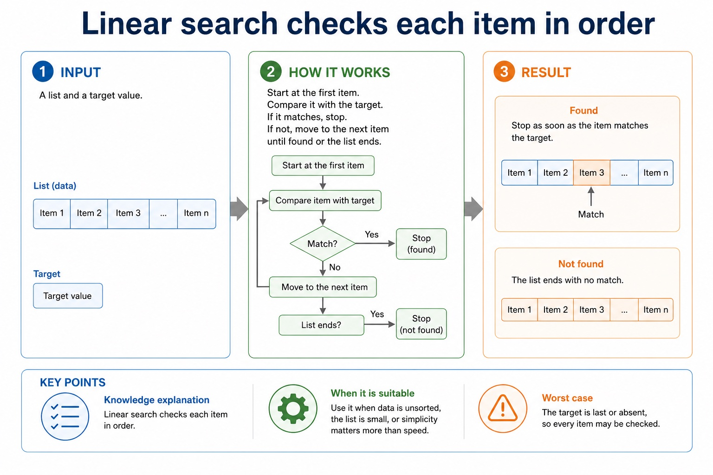

Linear search checks politely from the front. Binary search cuts the queue in half.
Searching means finding whether a target value is present and often where it is found. Linear search checks
items one by one and works on unsorted data. Binary search repeatedly checks the middle item, but only works
correctly when the data is sorted.
Tracelinear search and binary search using test data
Choosethe suitable search method from data size and sorted/unsorted status
Explainwhy binary search is faster but requires sorted data
13214256708891
Linear13 → 21 → 42 found
Binarymiddle 56 too high → left half → 21 too low → 42 found
Binary search is clever only because the list is sorted. Without order, "discard half" becomes "discard marks".
Why this matters
Paper 2 may ask students to trace, compare or justify a search method. "Faster" alone is not enough for the mark.
Common error
Binary search does not mean "start somewhere random". It means compare the middle, then discard the impossible half.
Warm-up hook
Find the exam paper in a pile
If the papers are unsorted, what is the safest search method?
Choose a strategy for unsorted data.
Knowledge explanation
Linear search checks each item in order
How it works
Start at the first item. Compare it with the target. If it matches, stop. If not, move to the next item until found or the list ends.
Chinese support: linear search = 线性搜索 / 顺序搜索。
When it is suitable
Use it when data is unsorted, the list is small, or simplicity matters more than speed.
Worst case: the target is last or absent, so every item may be checked.
Linear search checks each item in order

Linear search checks each item in order: source-grounded visual explanation.
Lesson fact: Knowledge explanation
Lesson fact: How it works
Lesson fact: Start at the first item. Compare it with the target. If it matches, stop. If not, move to the next item until found or the list ends.
Lesson fact: When it is suitable
Lesson fact: Use it when data is unsorted, the list is small, or simplicity matters more than speed.
Lesson fact: Worst case: the target is last or absent, so every item may be checked.
Knowledge explanation
Binary search repeatedly halves a sorted list
1Set Low to first index and High to last index.
2Find Mid, the middle index.
3Compare List[Mid] with Target.
4If target is smaller, move High left; if larger, move Low right.
Lesson fact: Choose a target to trace low, mid and high.
Worked examples
Search traces
Practice with instant checking
Searching accuracy
Type concise answers. Use Show answer after committing to a response.
Mistake debugging
Fix search mistakes
Exam-style questions
Original Cambridge-style search questions with expandable MS
These questions target tracing, method choice, sorted-data requirements and strict pseudocode reasoning.
Core syllabus content
Array model required by search algorithms
Before tracing a search, define the data structure it traverses. An array is a fixed-size indexed collection whose elements have one declared data type. The index selects one element; it is not the value stored in that element.
Cambridge pseudocode declares explicit inclusive bounds. In DECLARE Names : ARRAY[1:4] OF STRING, 1 is the lower bound, 4 is the upper bound and the valid indexes are 1, 2, 3 and 4. A search must start and stop within those declared bounds.
Linear search checks successive indexed elements until the target is found or every populated element has been checked. Binary search also uses indexes, but requires the array to be sorted so each comparison can discard one half of the remaining index range.
Worked example: Declare the search data before tracing it
DECLARE Names : ARRAY[1:4] OF STRING defines four string elements. For Names = ['Asha', 'Ben', 'Chen', 'Dina'], a one-based linear search compares Names[1], then Names[2], and stops when it finds 'Ben'. Index 0 is invalid because it is below the declared lower bound.
Core syllabus practice
Array model required by search algorithms: apply and assess
Targeted practice
1. What are the lower and upper bounds of ARRAY[1:4]?
Show answer
The lower bound is 1 and the upper bound is 4.
2. What does Names[Index] mean?
Show answer
The single array element selected by the current value of Index.
3. Why must binary search know the current Low and High indexes?
Show answer
They delimit the remaining sorted portion of the array that may contain the target.
Exam-style question
4 marks
Declare an array called Code that stores 20 STRING values, then state the first and last valid indexes used by a search.
Show MS
B1 DECLARE Code : ARRAY[1:20] or another explicit 20-element bound range
B1 OF STRING
B1 first valid index matches the declared lower bound
B1 last valid index matches the declared upper bound
Summary
Search checklist
LinearCompare each item with the target until found or list ends.
BinaryUse only sorted data; compare middle item and adjust low/high.
TraceRecord comparisons, index changes and found/not found outcome clearly.
Homework
Clear tasks for consolidation
Task 1: Linear traceTrace linear search for 56 and 99 in [13, 42, 56, 70]. State comparisons and final found/not found result.Task 2: Binary traceTrace binary search for 88 in [13, 21, 42, 56, 70, 88, 91]. Show Low, Mid, High for each comparison.Task 3: ExplanationExplain why binary search cannot be safely used on unsorted data unless the data is sorted first.